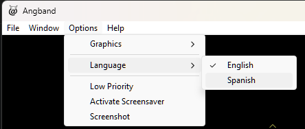
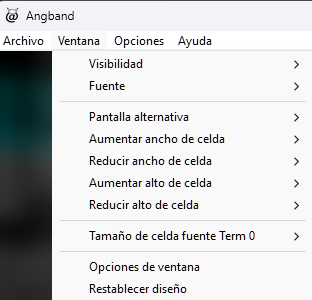
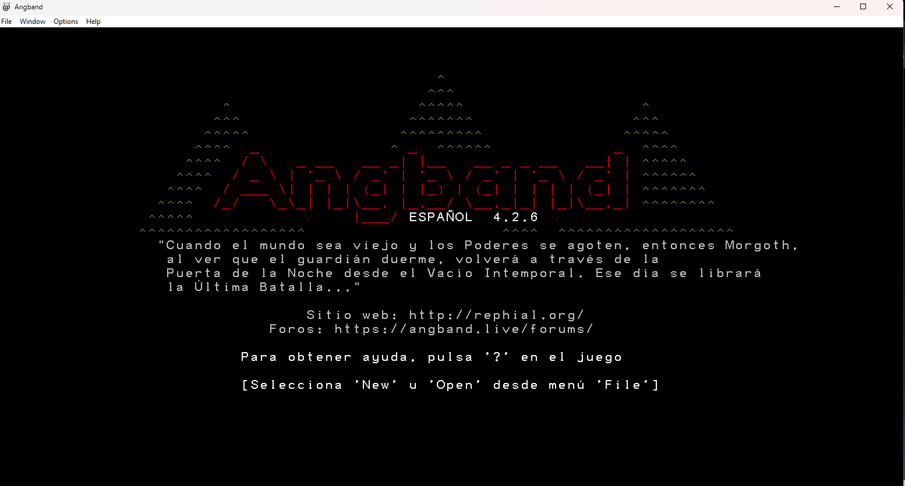
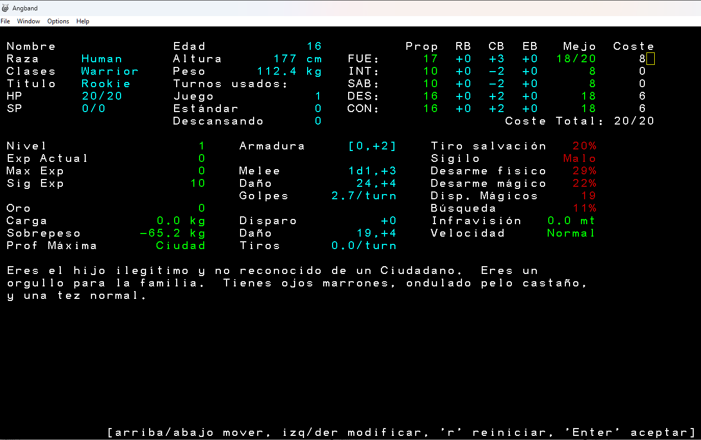
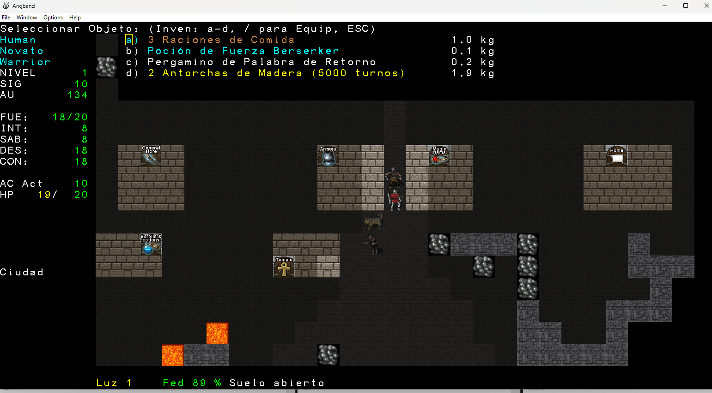
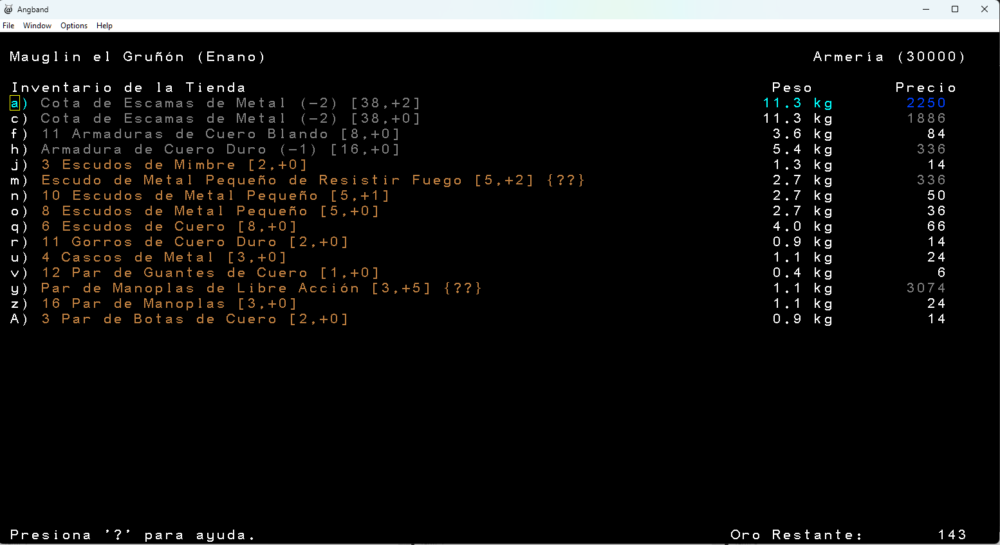

Volver
Angband 4.2.6 en Español
Estado general 98%
URL Proyecto Git https://github.com/hernaldog/angband/tree/traduc-espa%C3%B1ol
Bit√°cora principal
- 21-02-2026: Se entiende cómo compilar en Windows 11 y se hacen pruebas de concepto.
- 21-02-2026: Se inicia traducción de primeros elementos como
news.txt o archivos .c/.h base.
- 20-03-2026: Se traducen archivos
.txt dentro de gamedata, .rst y archivos de tiles .prf.
- 23-03-2026: Para facilitar la traducción al español se cambian todos los prefijos en objetos (ej. "Un Pergamino", "Ves 1 Antorcha de Madera"). Inspirado en Shattered Pixel Dungeon.
- 27-03-2026: Se editan
.txt, se agrega name_plural en object.txt y se modifican obj-init.c, object.h, obj-desc.c, z-textblock.c para manejar plurales en español.
- 28-03-2026: Se amplía el método que imprime caracteres a color de ASCII a UTF-8 en
effects-info.c para soportar tildes.
- 02-04-2026: Se traducen la mayoría de nombres de monstruos (
monster.txt, monster_base.txt, pit.txt, summon.txt, borg-flow-kill.c).
- 17-04-2026: Se traducen todos los objetos.
- 13-06-2026: Razas, Clases, Versos del Druida, ajustes de sem√°ntica.
- 25-06-2006: Se agrega género a los objetos (”Ves una Poción”, “Ves una Galleta”) y se traducen opciones de modo mago.
- 09-07-2026: Se crea un sistema multi-idioma (inglés/español) con
lib/locale/es.po y carpetas separadas lib/gamedata/en/*.txt y es/*.txt. Queda pendiente probar ambos idiomas.
Motivación
Me encantan los juegos roguelike clásicos como Moria, Rogue, etc., y siempre he sido fan de El Señor de los Anillos. Angband une ambos mundos. Tras jugarlo en inglés, pensé que más hispanohablantes lo disfrutarán en español. Con experiencia traduciendo ROMs de SNES/NES en los 2000, decidí aplicar lo aprendido. ¡Espero terminar lo empezado!
Objetivo del juego
Angband es una rama de UMoria. En esta versión hay que bajar al nivel 100 y derrotar a Morgoth. Wikipedia.
Enlaces
Licencia
Se mantienen las licencias originales: GNU GPL v2 y Licencia Angband.
Capturas






Estado actual de la traducciÛn.
Testing
Modo Mago
- Control + w entrar a modo mago (sin puntuación).
- Control + a activar comandos:
- c: elegir objeto que aparezca bajo tus pies.
- s: generar monstruos aleatorios.
- n: invocar monstruo por nombre o ID. Si escribes el nombre debe ser complerto, ejemplo "orco de cueva" y con esto se generan varios a la vez
- a: curarte.
- e: editar puntos de habilidad, experiencia u oro.
- j: teletransportarse a un nivel (classic, lair, town, moria, cavern).
- w: iluminar nivel.
- T: crear trampa (ej. trampa de gas).
- v: crear objeto muy bueno.
- A: subir al nivel 50 (m√°ximo de experiencia).
- M√°s comandos en
docs/hacking/debug.rst.
Teclas especiales (teclado español/latino)
Como setear un shortcut de ~ (ver conocimiento):
- Presiona = para ver opciones
- Presiona e Para Editar mapa de teclas
- Presiona d para crear un mapa
- Presiona la tecla ñ.
- Escribe la tecla deseada: Alt + 126 (para ~).
- Presiona = para guardar
- Selecciona b para guardar mapas de teclas en archivo
El archivo quedar√° en src/game/lib/user/<nombre>.prf.
Eliminar puntajes
Borra lib/user/scores/scores.raw y scores.old para evitar acumular historial.
Modo Borg
Control + Z modo autojugable. Presiona z para iniciar/detener.
Pasos para compilar (si quieres colaborar o traducir a otro idioma)
Si quieres colaborar cont√°ctame al correo indicado al inicio del sitio.
MSYS2 (Windows):
pacman -S make mingw-w64-x86_64-gcc mingw-w64-x86_64-cmake mingw-w64-x86_64-ninja
pacman -S mingw-w64-x86_64-libpng mingw-w64-x86_64-ncurses
pacman -S mingw-w64-x86_64-SDL2 mingw-w64-x86_64-SDL2_image mingw-w64-x86_64-SDL2_ttf mingw-w64-x86_64-SDL2_mixer
Desde src:
cmake -G Ninja -DSUPPORT_WINDOWS_FRONTEND=ON -DSUPPORT_STATIC_LINKING=ON ..
ninja
El ejecutable se genera en src/game/angband.exe.
Para probarlo, copia el .exe sobre la instalación base de Angband 4.2.6 (descargada de rephial.org).
Script compila.sh
Coloca el script en C:/msys64/home/tu_usuario y ejecuta .\compila.sh desde MSYS2 MINGW64.
Consideraciones para traducir
- Encoding: UTF-8 sin BOM para todos los
.c, .h, .txt.
- Se añade
#pragma code_page(65001) en win/angband.rc.
- Al traducir
.c, elimina src/game antes de compilar.
- Archivos txt: se editan en
fuente/lib/gamedata (no en src/game/lib/gamedata).
- Cambiar el
name en object.txt afecta a class.txt, ego_item.txt, store.txt y archivos de tiles (lib/tiles/shockbolt/graf-shb-dark.prf).
- El plural se marca con
~ (ej. Antorcha~ de Madera).
- No traducir:
object_base.txt y list-ignore-types.h (son puentes internos).